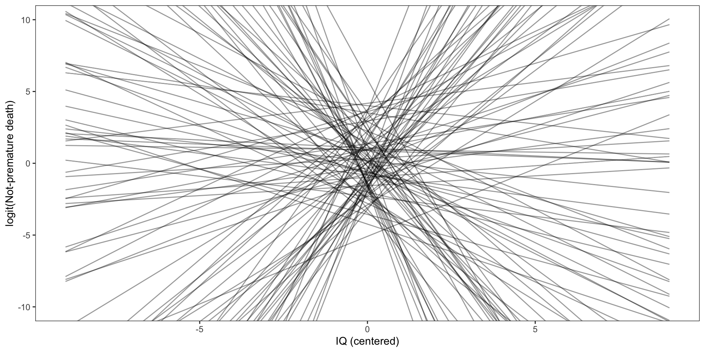
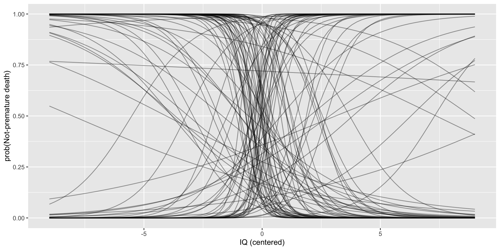
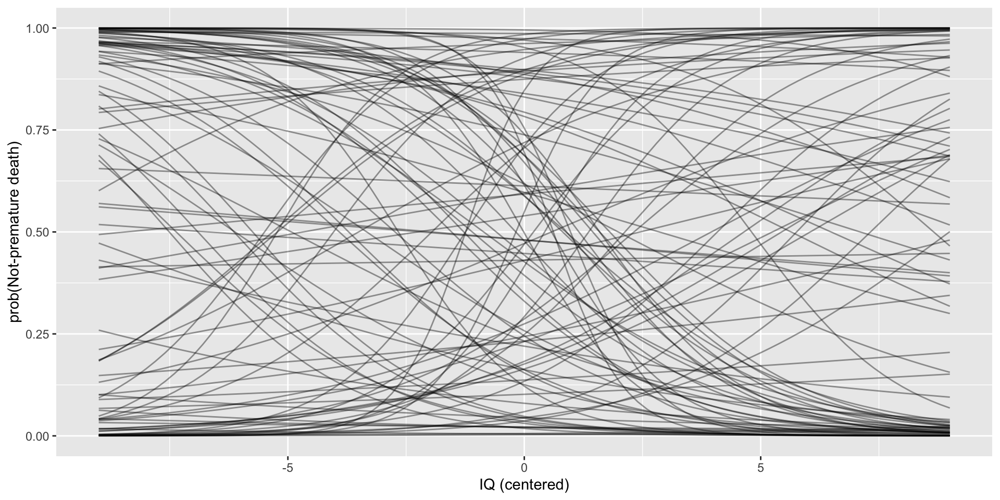
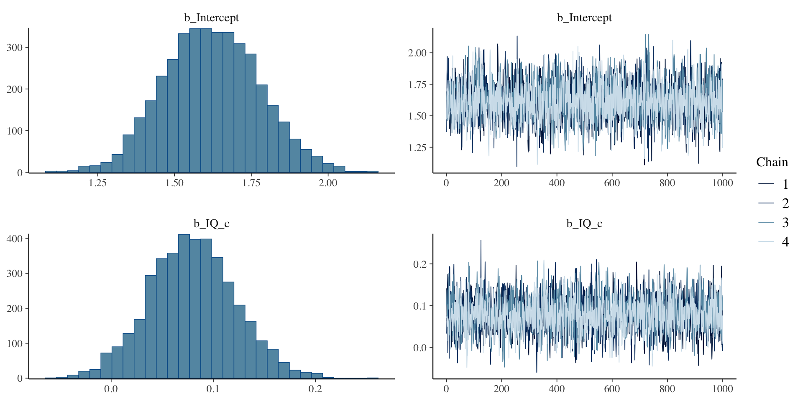
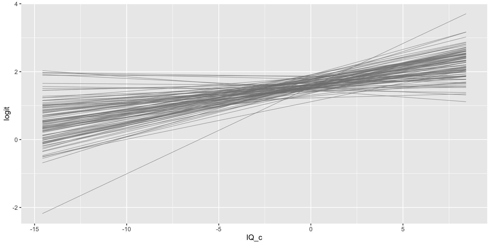
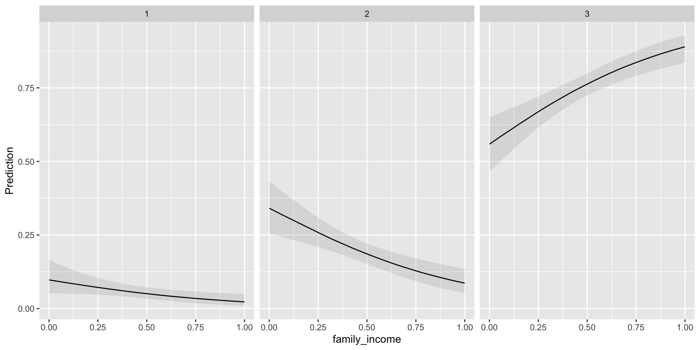

logistic (binary) and multinomial (unordered categories) regression
next time: counts and ordered categories
Generalized linear model
Used to describe different Data Generating Processes (DGPs) “likelihoods” other than the Gaussian (normal)
Need to use if we cannot use the Gaussian normal e.g. the range of Y is restricted (e.g. binary, count) and/or the variance of Y depends on the mean
Often there is a maximum entropy distribution that serves as the default likelihood, helping us guide our choice
Why not just use lm()?
Our example: does IQ, along with risky behavior, predict not dying prematurely (1 = no, 0 = yes)? Fit it both ways and compare each person’s predicted probability:
Each dot is a real person. lm() predicts a probability above 1 for 10 of them (red, up to 1.10). That’s not extrapolation: these are people in our data.
What goes wrong with lm()
Impossible predictions. A straight line has no ceiling or floor, so it runs past 1 (or below 0) wherever the predictors push it far enough.
Wrong where it matters most. For the riskiest person, lm() predicts 0.42; the logistic model says 0.23. The line can’t bend, so it understates risk at one end and overstates survival at the other.
Wrong variance. A 0/1 outcome has variance p(1 − p), which changes with p, so lm()’s constant-variance assumption can’t hold.
A GLM keeps the linear model but runs it through a link, so predictions stay in (0, 1) and bend where they should.
Two ingredients
Need to:
Specify your DGP distribution (likelihood)
Specify a link function. We do this so we can continue to use a typical linear regression model. The relationship between the predictors and the outcome’s mean is now non-linear, so we need to map it onto a linear one.
Which likelihood?
Outcome
brms family
Link
exp(coefficient)
Continuous
gaussian, student
identity
—
Binary, or k of n
bernoulli, binomial
logit
odds ratio
Unordered categories
categorical
logit
odds ratio vs. reference
Count, var ≈ mean
poisson
log
rate ratio
Count, var > mean
negbinomial
log
rate ratio
Count, extra zeros
zero_inflated_*, hurdle_*
log + logit
rate ratio + odds ratio
Ordered categories
cumulative
logit
cumulative odds ratio
Positive, skewed
lognormal, Gamma
log
multiplicative change
This week: binary and unordered categories. Next week (the next deck): counts and ordered categories.
Binomial
\[y_i \sim \operatorname{Binomial} (n, p_i)\]
\[f(p_i) = \alpha + \beta (x_i - \bar x)\]
The f of the \(f(p_i)\) is a link function, typically logistic
A link function is needed because the linear model on the right can produce any number, but \(p_i\) must stay between 0 and 1. The link maps one onto the other, so the model never makes improper probability predictions (ie outside of 0-1)
Link function for binomial
Our number of trials is a fixed N, (here it is 1, a Bernoulli) so we are predicting the probability of y. Probabilities are bounded between 0 and 1
Because our variables are not in probability units we need to “link” them via a function. The linear right side of the equation is not in the same units as the non-linear left side.
Instead of predicting probabilities directly, we are instead predicting the log of the odds. Other link functions: probit, negative inverse, cloglog.
The logit link
We need to map the s shaped ogive that goes between (0,1) to linear looking line that falls between \((-\infty, \infty)\)
Probabilities live in (0, 1); odds, \(p/(1-p)\), live in (0, ∞); log odds live in (−∞, ∞).
Think of it as a transformation of Y-hats \[f(p) = logit(p) = log (\frac {p_{i}}{1-p_{i}})\]
Logits are now in a shape similar to a normal regression (ie a line/plane that goes to infinity)
Odds, briefly
Odds = p / (1 − p): how many times more likely the event is to happen than not.
p
odds
log odds
.50
1 (1 to 1)
0
.80
4 (4 to 1)
1.39
.20
0.25 (1 to 4)
−1.39
.95
19 (19 to 1)
2.94
Odds run from 0 to ∞; log odds from −∞ to ∞, symmetric around p = .5.
In our data 83% did not die prematurely: odds ≈ .83 / .17 ≈ 4.9.
Inverse link
It is easier to think of transforming the probabilities but computationally the right side of the equation usually gets transformed. Note these two are equivalent.
\[f(p_i) = \alpha + \beta (x_i - \bar x)\]
\[p_i = f^{-1}(\alpha + \beta (x_i - \bar x))\]
For the logit link, the inverse link is the logistic function: \(p = \frac{1}{1 + e^{-x}}\) (plogis() or brms’s inv_logit_scaled()). For the log link (counts), the inverse is exp().
Exponential is constrained to be above zero. The waiting time until an event that happens at a constant rate follows an exponential. Used a lot in survival models.
Gamma is positive but its peak needn’t be at zero. It arises as the sum of several exponential waiting times (e.g., time until the kth event). Common for skewed positive outcomes like reaction times or costs.
Poisson for counts, when p is low and the number of trials is large or unknown. It is the limit of the binomial as n → ∞ with np fixed. Used a lot in health, epidemiology and sport applications where counts are used.
library(readr)mortality <-read_csv("mortality.csv") # also at https://josh-jackson.github.io/bayes27/mortality.csvmortality <- mortality %>%mutate(IQ_c = IQ -mean(IQ)) %>%select(-'...1')mortality
# A tibble: 300 × 5
Risky.behavior premature.d NOT.premature IQ IQ_c
<dbl> <chr> <dbl> <dbl> <dbl>
1 19 normal 1 22 5.43
2 18 normal 1 22 5.43
3 21 normal 1 21 4.43
4 17 normal 1 22 5.43
5 18 normal 1 19 2.43
6 22 premature 0 19 2.43
7 18 normal 1 16 -0.573
8 11 premature 0 15 -1.57
9 21 normal 1 16 -0.573
10 20 normal 1 19 2.43
# ℹ 290 more rows
Describing the data
300 people. NOT.premature = 1 if the person did not die prematurely (premature.d is the same thing as a label).
IQ is an Otis IQ score minus 100: add 100 to get the familiar IQ scale (mean ≈ 117). IQ_c centers it, so one unit is still one IQ point.
library(psych)describe(mortality)
vars n mean sd median trimmed mad min max range skew
Risky.behavior 1 300 18.68 3.47 19.00 18.85 2.97 5.00 25.00 20 -0.51
premature.d* 2 300 1.17 0.38 1.00 1.09 0.00 1.00 2.00 1 1.75
NOT.premature 3 300 0.83 0.38 1.00 0.91 0.00 0.00 1.00 1 -1.75
IQ 4 300 16.57 3.73 16.00 16.59 4.45 2.00 25.00 23 -0.20
IQ_c 5 300 0.00 3.73 -0.57 0.01 4.45 -14.57 8.43 23 -0.20
kurtosis se
Risky.behavior -0.08 0.20
premature.d* 1.06 0.02
NOT.premature 1.06 0.02
IQ -0.05 0.22
IQ_c -0.05 0.22
The model
\[\text{NOT.premature}_i \sim \operatorname{Binomial} (1, p_i)\]
or \[\text{NOT.premature}_i \sim \operatorname{Bernoulli} (p_i)\]
where \(\text{NOT.premature}_i = 1\) if person i did not die prematurely.
glm.3<-brm(family =bernoulli(link ="logit"), NOT.premature ~1+ IQ_c,prior =c(prior(normal(0, 2), class = Intercept),prior(normal(0, 3), class = b)),sample_prior ="yes",data = mortality,backend ="cmdstanr",file ="glm.3")
Prior predictive lines (logit scale)
Code
prior_draws(glm.3)%>%slice_sample(n =100) %>%rownames_to_column("draw") %>%expand(nesting(draw, Intercept, b),a =c(-9, 9)) %>%mutate(d = Intercept + b * a) %>%ggplot(aes(x = a, y = d)) +geom_line(aes(group = draw), alpha = .4) +labs(x ="IQ (centered)",y ="logit(Not-premature death)") +coord_cartesian(ylim =c(-10, 10)) +theme_bw() +theme(panel.grid =element_blank())

Prior predictive lines (probability scale)
scaled to probability
Code
a <-seq(-9,9, .2)prior_draws(glm.3)%>%slice_sample(n =100) %>%rownames_to_column("draw") %>%expand(nesting(draw, Intercept, b), a) %>%mutate(d =inv_logit_scaled(Intercept + b * a)) %>%ggplot(aes(x = a, y = d)) +geom_line(aes(group = draw), alpha = .4) +labs(x ="IQ (centered)",y ="prob(Not-premature death)") +coord_cartesian(ylim =c(0, 1))

A tighter slope prior
Instead of normal(0, 3), let’s try normal(0, .5) for our prior
Code
glm.4<-brm(family =bernoulli(link ="logit"), NOT.premature ~1+ IQ_c,prior =c(prior(normal(0, 2), class = Intercept),prior(normal(0, .5), class = b)),sample_prior ="yes",data = mortality,backend ="cmdstanr",file ="glm.4")
Prior predictive lines with Normal(0, .5)
Code
a <-seq(-9,9, .2)prior_draws(glm.4)%>%slice_sample(n =100) %>%rownames_to_column("draw") %>%expand(nesting(draw, Intercept, b), a) %>%mutate(d =inv_logit_scaled(Intercept + b * a)) %>%ggplot(aes(x = a, y = d)) +geom_line(aes(group = draw), alpha = .4) +labs(x ="IQ (centered)",y ="prob(Not-premature death)") +coord_cartesian(ylim =c(0, 1))

glm.4 summary
summary(glm.4)
Family: bernoulli
Links: mu = logit
Formula: NOT.premature ~ 1 + IQ_c
Data: mortality (Number of observations: 300)
Draws: 4 chains, each with iter = 2000; warmup = 1000; thin = 1;
total post-warmup draws = 4000
Regression Coefficients:
Estimate Est.Error l-95% CI u-95% CI Rhat Bulk_ESS Tail_ESS
Intercept 1.62 0.16 1.33 1.93 1.00 2672 2500
IQ_c 0.08 0.04 -0.00 0.16 1.00 2871 2474
Draws were sampled using sample(hmc). For each parameter, Bulk_ESS
and Tail_ESS are effective sample size measures, and Rhat is the potential
scale reduction factor on split chains (at convergence, Rhat = 1).
The looser Normal(0, 3) prior (glm.3) gives the same IQ slope, 0.08: with 300 people, the data dominate either prior. The tighter prior mainly rules out absurd prior predictions.
Where’s σ?
Every Gaussian model so far had a sigma. The logistic summary doesn’t. Why?
A Bernoulli outcome has one parameter, p. Once you know p, the variance is fixed: var(y) = p(1 − p).
So the spread isn’t estimated separately; it comes along with the mean. That’s what “the variance of Y depends on the mean” meant at the start. (Next week: for a Poisson count, the variance equals the mean.)
Separation: a Bayesian bonus
When a predictor perfectly splits the 0s from the 1s, maximum likelihood breaks: the “best” slope is infinite.
set.seed(7)sep <-tibble(x =round(rnorm(20), 2)) %>%mutate(y =as.integer(x >0)) # every x > 0 is a 1coef(summary(glm(y ~ x, family = binomial, data = sep)))
Estimate Std. Error z value Pr(>|z|)
(Intercept) -20.10374 14071.4 -0.001428695 0.9988601
x 267.96119 132223.2 0.002026583 0.9983830
Code
glm.sep <-brm(family = bernoulli, y ~1+ x,prior =c(prior(normal(0, 2), class = Intercept),prior(normal(0, 2.5), class = b)),data = sep, backend ="cmdstanr", file ="glm.sep")fixef(glm.sep)
glm() warns and returns a slope in the hundreds with an enormous SE. A weakly informative prior keeps it finite and says something honest: large, positive, uncertain.
Separation is common with small samples, rare outcomes, or many predictors.
Interpreting logistic coefficients
Interpretation of coefficients is not straight forward. Easier to plot predictions.
Why are they hard?
Logits are not on a natural scale
The association is nonlinear on the probability scale
So the change in probability depends on where you start (and on the other predictors)
On the probability scale: averaged over the sample, one more IQ point raises Pr(not premature) by about 1 percentage point.
Quick check, divide by 4: the logistic curve is steepest at p = .5, where the probability slope is b/4. Here 0.079 / 4 ≈ 2.0 points, the most one IQ point can ever move the probability. We’re up near p = .83, so the real slope is smaller.
The probability slope isn’t constant
The logit slope is one number, but the probability slope depends on where you are on the curve:
More risky behavior, lower odds of survival. And IQ’s slope grows from 0.08 to 0.13: IQ and risky behavior are positively correlated (r = 0.32), so leaving risky behavior out masked part of IQ’s association, just as in lm().
Logistic coefficients can also shift when you add a predictor unrelated to the others (non-collapsibility). Compare models on predicted probabilities, not raw coefficients.
IQ’s effect depends on risky behavior
There’s no interaction in glm.4r, but on the probability scale:
One more IQ point is worth about 0.5 percentage points for low-risk people (already near the ceiling) and 3.0 for high-risk people, whose survival is lower and where the curve is steeper.
The logit slope is the same for everyone; the probability effect isn’t. So with several predictors, “the effect of IQ” depends on where the others are set. avg_comparisons(glm.4r, variables = "IQ_c") averages over everyone in the sample.
Trace plots
plot(glm.4)

Posterior predictive check
pp_check(glm.4, type ="bars")

For a 0/1 outcome, compare the observed counts of 0s and 1s (bars) with the model’s replications (points and intervals). The default density overlay isn’t meaningful for binary data.
A better check: calibration
The bars only check that the model gets the overall share of 1s right, which almost any model with an intercept does. Calibration asks: when the model says 80%, do about 80% survive? Here for glm.4r (IQ + risky behavior):
When we want to create fitted values we run into an extra complication. Do we want to plot probabilities (original metric) or logits (our transformed metric)? We haven’t had to deal with this before because we didn’t do any transformations with a Gaussian normal.
epred: the expected value on the response scale (here, a probability)
linpred: the linear predictor on the link scale (here, log odds)
predict: a simulated new observation on the response scale (here, a 0 or 1)
epred vs linpred
Code
# posterior medians at -1 SD, the mean, and +1 SD of IQgrid <-tibble(IQ_c =c(-3.73, 0, 3.73))epred <- grid %>%add_epred_draws(glm.4) %>%median_qi(.epred)linpred <- grid %>%add_linpred_draws(glm.4) %>%median_qi(.linpred)tibble(IQ_c = grid$IQ_c, epred = epred$.epred, linpred = linpred$.linpred,`plogis(linpred)`=plogis(linpred))
Data often come as counts: k successes out of n per group. Use binomial with trials(n):
mort_agg <- mortality %>%group_by(IQ_c) %>%summarise(k =sum(NOT.premature), n =n())head(mort_agg, 3)
# A tibble: 3 × 3
IQ_c k n
<dbl> <dbl> <int>
1 -14.6 1 1
2 -10.6 0 1
3 -9.57 1 1
Code
glm.4agg <-brm(family = binomial, k |trials(n) ~1+ IQ_c,prior =c(prior(normal(0, 2), class = Intercept),prior(normal(0, .5), class = b)),data = mort_agg, backend ="cmdstanr", file ="glm.4agg")rbind(`one row per person (glm.4)`=fixef(glm.4)[, "Estimate"],`one row per IQ value (glm.4agg)`=fixef(glm.4agg)[, "Estimate"])
Intercept IQ_c
one row per person (glm.4) 1.620546 0.07943066
one row per IQ value (glm.4agg) 1.619088 0.08148717
Same likelihood, same estimates (up to MCMC noise), 21 rows instead of 300. (LOO differs, though: it leaves out a whole group, not a person.)
Writing it up
Report the coefficient on an interpretable scale and the probabilities. For example:
Higher IQ was associated with higher odds of not dying prematurely (OR = 1.08 per IQ point, 95% CI [1.00, 1.18]). People 1 SD above average IQ had a predicted probability of 0.87 of not dying prematurely, versus 0.79 for people 1 SD below (difference = 8 percentage points, 95% CI [0, 17]).
In the methods: the likelihood (Bernoulli), the link (logit), and the priors.
Show the fitted probability curve; it carries more than any single number.
Multinomial logistic regression
When you are predicting more than two groups (aka categorical regression aka maximum entropy classifier)
Uses a categorical (multinomial) distribution, the generalization of the binomial. Like the binomial but with more events.
Need to construct K - 1 linear models for K events, similar to constructing number of dummy variables
When would you use this?
Anytime people have more than two choices in some task. Trying to understand different demographic categories (race/ethnicity/gender identities/etc).
Eg, does 401k amount predict whether someone at 62 is retired/part time/ still working? You could use 401k amount as the DV, with two dummy variables as predictors, but what if you wanted to control for years worked? Very different interpretations depending on what is your DV.
Multinomial example from SR
Career choice predicted by salary
Code
#|softmax <-function(...) { x <-c(...); exp(x) /sum(exp(x)) } # same as rethinking::softmax# simulate career choices among 500 individualsn <-500# number of individualsincome <-c(1, 2, 5) # expected income of each careerscore <-0.5* income # scores for each career, based on income# next line converts scores to probabilitiesp <-softmax(score[1], score[2], score[3])# now simulate choice# outcome career holds event type values, not countscareer <-rep(NA, n) # empty vector of choices for each individual# sample chosen career for each individualset.seed(123)# sample chosen career for each individualfor(i in1:n) career[i] <-sample(1:3, size =1, prob = p)d <-tibble(career = career)d %>%ggplot(aes(x = career)) +geom_bar()

K − 1 linear models
For K categories, we estimate K -1 linear models. Think of a logistic regression where K = 2, we fit just a single regression model. Here we are doing multiple regression models simultaneously within the same model.
Intercept only model, where we will get two intercepts, because it is like we have two models
glm.5<-brm(family =categorical(link = logit, refcat =3), # to match up with book career ~1,prior =c(prior(normal(0, 1), class = Intercept, dpar = mu1),prior(normal(0, 1), class = Intercept, dpar = mu2)),iter =2000, warmup =1000, cores =4, chains =4,data = d,backend ="cmdstanr",file ="glm.5")
glm.5 summary
summary(glm.5)
Family: categorical
Links: mu1 = logit; mu2 = logit
Formula: career ~ 1
Data: d (Number of observations: 500)
Draws: 4 chains, each with iter = 2000; warmup = 1000; thin = 1;
total post-warmup draws = 4000
Regression Coefficients:
Estimate Est.Error l-95% CI u-95% CI Rhat Bulk_ESS Tail_ESS
mu1_Intercept -2.01 0.15 -2.31 -1.73 1.00 2871 2546
mu2_Intercept -1.57 0.13 -1.83 -1.34 1.00 3107 2630
Draws were sampled using sample(hmc). For each parameter, Bulk_ESS
and Tail_ESS are effective sample size measures, and Rhat is the potential
scale reduction factor on split chains (at convergence, Rhat = 1).
The tight prior pulled both slopes most of the way to 0, and the intercepts moved to compensate. The looser one gets career 2 right.
Career 1 is still off, and even the data alone can’t pin it down: only 25 of 500 people chose it. Rare categories carry little information, so their estimates lean on the prior.
From here on we use glm.6b.
Reading the slopes
Each slope is the change in the log odds of that career versus career 3 per unit of family income (0 to 1 here, so one unit is the whole range).
mu2_family_income = -1.84: going from the lowest to the highest family income multiplies the odds of career 2 vs. career 3 by about 0.16.
mu1_family_income = -1.93: likewise for career 1 vs. 3 (about 0.15), but with a wide interval.
Careful: a slope says how a career does relative to the reference, not whether its own probability goes up or down. Probabilities must sum to 1, so a category with a negative slope can still gain probability if the others fall faster. Plot the predicted probabilities (next).
The reference category is bookkeeping. Changing refcat changes every coefficient (they’re all “vs. the reference”) but not the predicted probabilities. Pick the reference that makes the comparisons you care about easy to read.
Ordered categories? If the categories have a natural order (never / sometimes / often), a multinomial model throws that order away. Use an ordinal (cumulative) model instead: next deck.